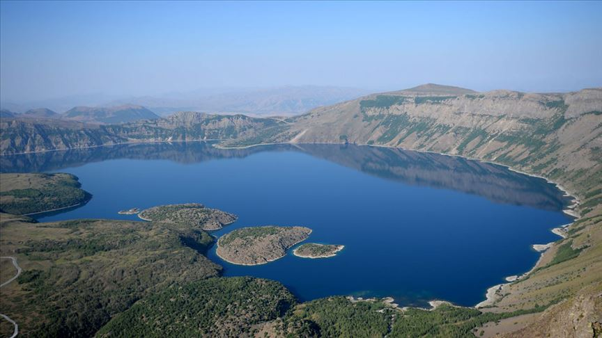
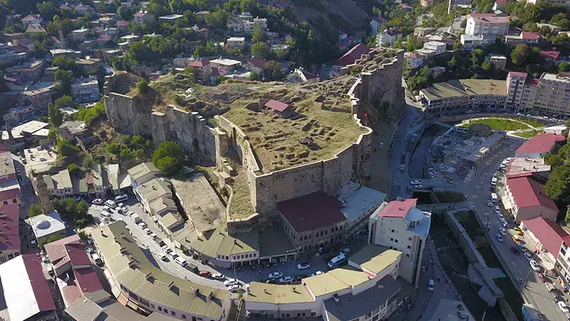

Gezilecek Yerler

Nemrut Krater Gölü
Nemrut Krater Gölü, Bitlis'in eşsiz doğal güzelliklerinden biridir. Yürüyüş ve kamp için harika bir destinasyondur.

Selçuklu Mezarlığı
Ahlat'taki tarihi mezar taşları, Selçuklu dönemine ait etkileyici bir kültürel mirastır.

Bitlis Kalesi
Şehrin simgesi olan Bitlis Kalesi, tarihi ve stratejik konumuyla ziyaretçileri etkiler.